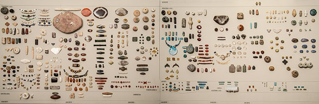

Bead Timeline: A Labor of Love
A timeline, the time-tested tool of prehistorians, can show at a glance the relationship among artifacts-created and traded throughout the world at any one point in time, or changing through time at a single site. Timelines are magnificent storytellers. In 2009 the Yale Peabody Museum received the gift of the Bead Timeline from the dedicated collectors and researchers of the Bead Society of Greater Washington. The additional donation of thousands of loose beads along with the more-than 5,000 beads on the entire Bead Timeline-originally extending 34 feet (more than 10 meters) and displaying examples from 10,000 BCE to today-augment the tens of thousands of beads from various Yale expeditions and excavations already housed within the Museum's anthropology collections. Presented here is one of the panels from the Bead Timeline, highlighting beads from approximately 3,000 BCE to 700 BCE. Also highlighted is active research on similar beads by Yale faculty and students. Nearby displays offer greater detail on individual research into sourcing, laboratory analysis and interpretation.
Click below to explore the timeline

Anne Underhill, Professor of Anthropology
"Jade beads were valued as burial goods for high-ranking people during the early and middle phases of the Liangzhu culture in China, around 3300 to 2600 BC. The individual buried here (sex unknown) was discovered at the Yaoshan site, located in Zhejiang province, not far from Shanghai."
Oswaldo Chinchilla Mazariegos
"Emerging trade networks allowed the members of rising elites in early Mesoamerican communities to acquire jade from restricted sources in eastern Guatemala. Many hours of specialized work were needed to make small beads, coveted for their color, shine and hardness."
Gabriel Prieto
"My primary interest in beads is to understand why people depicted so many different elements on them-animals, vegetation, human and abstract motifs-using valuable or exotic materials such as metals, shells or semi-precious stones. Even more interesting is why and how these little amulets became signs of status and mysterious messages. The symbolism provided by these bead-codes is key to understanding cultural change across ancient societies."